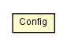

chameleon.core
Class Config

java.lang.Object
 chameleon.core.Config
chameleon.core.Config
public class Config
- extends Object
| Methods inherited from class java.lang.Object |
clone, equals, finalize, getClass, hashCode, notify, notifyAll, toString, wait, wait, wait |
DEBUG
public static final boolean DEBUG
- OPTIMISATION CONSTANTS *
- See Also:
- Constant Field Values
CACHE_ALL_TYPE_NAMES
public static final boolean CACHE_ALL_TYPE_NAMES
- See Also:
- Constant Field Values
CACHE_DECLARATIONS
public static boolean CACHE_DECLARATIONS
CACHE_ELEMENT_REFERENCES
public static boolean CACHE_ELEMENT_REFERENCES
- Turn cache of element references on and off. Default is on.
CACHE_EXPRESSION_TYPES
public static boolean CACHE_EXPRESSION_TYPES
- Turn cache of expression types on and off. Default is on.
CACHE_LANGUAGE
public static boolean CACHE_LANGUAGE
- Turn cache of language on and off. Default is on.
Config
public Config()